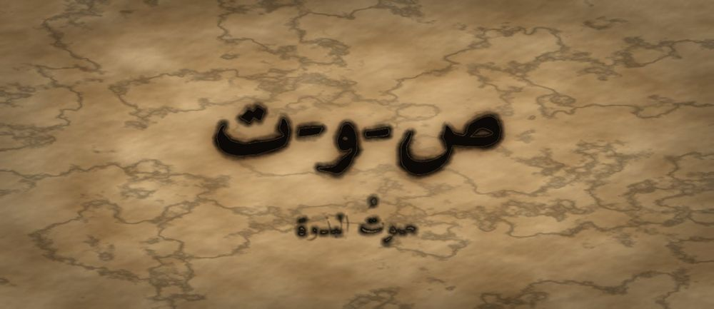

مَطبعةُ جُذور · دبي · MCMXXVI · سِلْسِلَةُ فَنِّ البَيان

مَرحلةُ البَذْرَة · الفئة ٤–٦ · الجذر ص-و-ت · الخليل بن أحمد
❦ ✦ ❧

صَوْتُ الْبَذْرَةِ
قبل أن تبدأ — تنبيهٌ للمعلّم والأهل
بطاقةُ هُوِيَّةِ السِّفْرِ
| المستوى / الدرجة | بذرة — بذرةٌ تستيقظُ (الدرجة الوسطى في المستوى الأول) |
| الفئة العمرية | ٤–٦ سنوات · نطاق تداخل يمتد إلى ٧ للمتعلّم المتأخّر |
| الجذر الأساسي | ص – و – ت · الصَّوْتُ: النَّفَسُ حِينَ يرتعشُ |
| أسرةُ الجذر | صَوْت · صَوَّتَ · أصْوات · مُصَوِّت · تَصْويت · مُصَوَّت (كلُّها من ص-و-ت) |
| المحطّة | الصَّوْتُ — أوّلُ أثرٍ مسموعٍ للحضورِ |
| المرساة الحسّيّة | لمسُ الحلقِ لرصدِ الاهتزازِ: المجهورُ يُرعِشُ، والمهموسُ لا |
| الاستعارة | البذرةُ التي تعلَّمتْ أنْ تتنفَّسَ، تكتشفُ أنَّ نَفَسَها يصيرُ صوتًا |
| الشخصيتان الحكيمتان | الخليلُ بنُ أحمدَ الفراهيديُّ (عالِمُ الأصواتِ) + الجَدّةُ رملة |
| الشخصية الرمزيّة | نورُ البذرةِ (نفسُها من السفرِ الأوّلِ — تنمو) |
| الشخصية المضادّة | الرَّعْدُ الأجوفُ — شخصيّةٌ رمزيّةٌ (لا تاريخيّةٌ) تُمثِّلُ الضجيجَ الفارغَ، وتتعلّمُ الإصغاءَ |
| محك الإتقان | يستيقظُ: يُصدِرُ صوتًا ويلمسُ حلقَهُ مميّزًا الصوتَ الذي يُرعِشُ الحلقَ من الذي لا يُرعِشُهُ |
| مجال CASEL | الوعيُ الذاتيُّ (Self-Awareness) |
| المعيار الدولي | CEFR Pre-A1 · ACTFL Novice-Low · UNESCO: التعلّم المبكّر |
الجذرُ وأسرتُهُ — مهارةٌ ولغةٌ
على نهجِ القالبِ الذهبيِّ، نعرضُ الجذرَ ثمَّ أسرتَهُ من الكلماتِ، لنُري الطفلَ أنَّ اللغةَ عائلةٌ متشابكةٌ.
| الجذرُ (المهارةُ) | أسرةُ الجذرِ (كلماتٌ من النَّسَبِ نفسِهِ) |
|---|---|
| ص – و – ت | صَوْت · صَوَّتَ · أصْوات · مُصَوِّت · تَصْويت · مُصَوَّت |
الْقِصَّةُ الكاملةُ: «صَوْتُ نُورٍ»
النسخةُ الكاملةُ · للقراءةِ الجهريّةِ مع الطفلِ (٥–٦ سنوات) · مدّةُ السردِ: ٧ دقائق
بعدَ أنْ تعلَّمتْ نورُ أنْ تتنفَّسَ، فتحتْ عينَيْها لأوّلِ مرّةٍ. كانتْ تشعرُ بشيءٍ صغيرٍ يتحرَّكُ في صدرِها، يريدُ أنْ يخرجَ... لكنَّها لا تعرفُ كيفَ.
حاولتْ أنْ تقولَ «صباحَ الخيرِ» للمطرِ، فخرجَ هواءٌ فقط — بِلا صوتٍ. هَمْسٌ خفيفٌ كالنسيمِ. حزنتْ نورُ قليلًا، وقالتْ في نفسِها: «هل لي صوتٌ أصلًا؟»
وفجأةً، هدرَ في السماءِ الرَّعْدُ الأجوفُ. كان يخافُ في داخلِهِ ألّا يسمعَهُ أحدٌ، فظنَّ أنَّ الصُّراخَ هو الحلُّ. وكان صوتُهُ عاليًا جدًّا يملأُ المكانَ:
اختبأتْ نورُ خلفَ ورقةٍ. صارَ صوتُها الصغيرُ يبدو لها بِلا قيمةٍ أمامَ هذا الهديرِ الضخمِ. وكلَّما حاولتْ أنْ تُصوِّتَ، تذكَّرتِ الرعدَ فسكتتْ.
جلسَ بجانبِ التُّرابِ الحكيمُ الخليلُ بنُ أحمدَ، وهو الرجلُ الذي يجمعُ الأصواتَ كما يجمعُ غيرُهُ اللآلئَ. ومعَهُ الجَدّةُ رملة التي عرفناها من قبلُ.
قالَ الخليلُ بصوتٍ هادئٍ: «يا نورُ، الصوتُ ليسَ حجمًا، بل اهتزازٌ. ضعي يدَكِ على حلقِكِ — أو اشعُري بجذعِكِ — وانظري ماذا يحدثُ.»
وضعتِ الجَدّةُ رملةُ كفَّها على حلقِها وقالتْ: «جرّبي معي. حِينَ أقولُ سسسسس... — المِسي، هل يرتجفُ حلقي؟»
ثمَّ قالتِ الجَدّةُ: «الآنَ أقولُ: زززززز... أو أُهَمْهِمُ مممممم... المِسي حلقي الآنَ.»
وضعتْ نورُ كفَّها الصغيرَ على حلقِها. أخذتْ نَفَسًا — كما تعلَّمتْ في المرّةِ الماضيةِ — ثمَّ جعلتْهُ يرتعشُ: «مممممم...»
وفجأةً... شعرتْ بالرعشةِ تحتَ كفِّها! اهتزازٌ صغيرٌ دافئٌ. صوتُها! صوتُها هي — لا الرعدُ، ولا أحدٌ غيرُها. صغيرٌ نعم، لكنَّهُ حقيقيٌّ، ويخصُّها وحدَها.
قالتْ نورُ بصوتٍ صغيرٍ مرتعشٍ، لكنْ واضحٍ: «صَبَاحُ الْخَيْرِ.» وكان أوّلَ صوتٍ حقيقيٍّ في حياتِها.
وحدثَ شيءٌ عجيبٌ: الرَّعْدُ الأجوفُ توقَّفَ عن الهديرِ... وأصغى. فقد كان صوتُ نورٍ الصغيرُ يحملُ معنًى، أمّا هديرُهُ هو فكان فارغًا. وهَمَسَ الرعدُ في خجلٍ: «صوتُكِ الصغيرُ... أجملُ من بُوومي الكبيرِ. لأنَّ فيهِ شيئًا... فيهِ أنتِ.»
وتعلَّمَ الرعدُ أنَّ الصوتَ الحقيقيَّ ليسَ الأعلى، بل الذي يحملُ قلبًا.
النسخةُ المختصرةُ (للأصغرِ · ٣ دقائق)
للطفلِ في الرابعةِ — جُملٌ قصيرةٌ، المعنى نفسُهُ.
الْعَنَاصِرُ الْخَمْسَةُ لِلتَّطْبِيقِ
| العنصر | النشاط | الهدف |
|---|---|---|
| المُخرَجُ اللُّغَويُّ | «صَوْتِي لِي» — يقولُها الطفلُ وكفُّهُ على حلقِهِ | ملكيّةُ الصوتِ والثقةُ بهِ |
| الحركةُ الجسديّةُ | كفٌّ على الحلقِ + قولُ «سسسس» (مهموس) ثمَّ «مممم» (مجهور) | تمييزُ الاهتزازِ حسّيًّا |
| الدفءُ العلائقيُّ | يلمسُ حلقَ مرافقِهِ ليشعرَ باهتزازِ صوتِهِ هو الآخرُ | المشاركةُ الصوتيّةُ |
| البديلُ الحسّيُّ | يضعُ يدَهُ على صندوقٍ خشبيٍّ يُطرَقُ ليشعرَ بالاهتزازِ | إدراكُ الاهتزازِ بِلا صوتٍ |
| الجسرُ الإنجليزيُّ | «My voice is mine.» | التوازنُ اللُّغَويُّ |
الدَّرَجَةُ التَّحْتِيَّةُ وَمِحَكُّ الْإِتْقَانِ (متدرّجٌ)
مِحَكَّاتُ CASEL السُّلُوكِيَّةُ (الوَعْيُ الذَّاتِيُّ)
- يُسمِّي صوتَهُ بأنّهُ «لهُ» ويعبّرُ عن فخرِهِ بهِ.
- يتوقَّفُ قبلَ أنْ يرفعَ صوتَهُ، مدركًا أنَّ العاليَ ليسَ الأجملَ.
- يُمَيِّزُ بلمسِ حلقِهِ الصوتَ الذي يُرعِشُهُ من الذي لا يُرعِشُهُ.
- يُبدي استعدادًا لتكرارِ إصدارِ الصوتِ ويطلبُهُ بنفسِهِ.
بُرُوتُوكُولُ التَّوَقُّفِ الْآمِنِ وَبَدَائِلُ الدَّمْجِ
بَدَائِلُ ذَوِي الِاحْتِيَاجَاتِ الْخَاصَّةِ
| الحالة | البديل المقترح |
|---|---|
| ضعفُ السمعِ | يُركَّزُ كلِّيًّا على الاهتزازِ اللمسيِّ: كفٌّ على الحلقِ أو على آلةٍ تهتزُّ — فالدرسُ حسّيٌّ أصلًا لا سمعيٌّ. |
| الصمتُ الانتقائيُّ (Selective Mutism) | لا يُطلَبُ صوتٌ إطلاقًا؛ يلمسُ حلقَ مرافقِهِ ليشعرَ بالاهتزازِ، ويُكتفى بذلك بِلا ضغطٍ. |
| بحّةٌ أو حساسيّةُ حلقٍ | يكتفي بالهمسِ (المهموسِ) فقط، ويُؤجَّلُ المجهورُ حتى يرتاحَ الحلقُ. |
| فرط حركة / صعوبة تركيز | تُربطُ التجربةُ بلعبةٍ: «اجعلِ النحلةَ تطنُّ مممم» لمدّةٍ قصيرةٍ. |
| طيفُ التوحّد (ASD) | يُستخدَمُ مؤقّتٌ بصريٌّ، وتُقلَّلُ الأصواتُ المفاجئةُ؛ يُمكنُ تجاوزُ مشهدِ الرعدِ إن أزعجَهُ. |
| قلقٌ اجتماعيٌّ | يُصدِرُ صوتَهُ وحدَهُ أوّلًا، ثمَّ مع مرافقٍ واحدٍ، قبلَ أيِّ مجموعةٍ. |
دَلِيلُ الْأَهْلِ وَالْمُعَلِّمِ
📵 قبلَ الجلسةِ: صندوقُ الشاشاتِ ثمَّ الإنصاتُ
ضعوا أوّلًا جميعَ الأجهزةِ في صندوقٍ مغلقٍ — كما في السفرِ الأوّلِ — فالصوتُ الحقيقيُّ لا يُكتشَفُ وسطَ ضجيجِ الشاشاتِ. ثمَّ اجلسوا لحظةً في صمتٍ، واستمعوا معًا لأصغرِ صوتٍ في الغرفةِ (ساعةٌ، نَفَسٌ، طائرٌ)، لتُعِدّوا أُذنَ الطفلِ لتقديرِ الأصواتِ الصغيرةِ.
🎵 أثناءَ الجلسةِ: الاهتزازُ المشتركُ
ضعوا كفَّ الطفلِ على حلقِكم وأنتم تُهَمْهِمونَ، ثمَّ كفَّهُ على حلقِهِ. المقارنةُ الحسّيّةُ هي الدرسُ. لا تصحّحوا «جمالَ» صوتِهِ — احتفوا بوجودِهِ فقط.
🏠 بعدَ الجلسةِ: لعبةُ المجهورِ والمهموسِ
خلالَ اليومِ، العبوا: «هل هذا الصوتُ يُرعِشُ الحلقَ أم لا؟» (ززز مجهور، سسس مهموس، فff مهموس، مmm مجهور).
مِقْيَاسُ جُذُورَ النَّفْسِيُّ — وحدةُ السِّفْرِ الثاني
تُملأُ مرّتينِ: قبلَ البدءِ، وبعدَ ثلاثةِ أسابيعَ. المقياسُ: ○ نادرًا · ◐ أحيانًا · ● غالبًا. ويُفضَّلُ مُقيِّمانِ مستقلّانِ.
البُعدُ الجديدُ: التعبيرُ الصوتيُّ
| المؤشّر السلوكيّ | ○ نادرًا | ◐ أحيانًا | ● غالبًا | ملاحظة |
|---|---|---|---|---|
| يُصدِرُ صوتًا واعيًا حِينَ يُطلبُ منهُ | ○ | ◐ | ● | |
| يلمسُ حلقَهُ ويُمَيِّزُ المجهورَ من المهموسِ | ○ | ◐ | ● | |
| يعبّرُ عن أنَّ صوتَهُ «لهُ» بثقةٍ | ○ | ◐ | ● | |
| لا ينزعجُ من صوتِهِ الصغيرِ أمامَ الأصواتِ العاليةِ | ○ | ◐ | ● |
تعميقُ بُعدِ الوعي بالصوتِ
| المؤشّر السلوكيّ | ○ نادرًا | ◐ أحيانًا | ● غالبًا | ملاحظة |
|---|---|---|---|---|
| يُعبّرُ عن فرقِ الصوتِ العالي والمنخفضِ بكلمةٍ بسيطةٍ | ○ | ◐ | ● | |
| يتحمّلُ سماعَ أصواتٍ مختلفةٍ دونَ انزعاجٍ | ○ | ◐ | ● | |
| ما يزالُ يربطُ بينَ النَّفَسِ والصوتِ | ○ | ◐ | ● |
تاريخ القياس القبلي: ________ تاريخ القياس البعدي: ________
مُفْرَدَاتُ السِّفْرِ
| الكلمة | المعنى المبسّط | English |
|---|---|---|
| صَوْتٌ | النَّفَسُ حِينَ يرتعشُ فنسمعُهُ | voice / sound |
| مَجْهُورٌ | صوتٌ يجعلُ الحلقَ يرتعشُ (مثل: ز، م) | voiced |
| مَهْمُوسٌ | صوتٌ يمرُّ بِلا رعشةٍ (مثل: س، ف) | voiceless |
| اِهْتِزَازٌ | رعشةٌ صغيرةٌ تشعرُ بها تحتَ كفِّكَ | vibration |
| تَصْويتٌ | أنْ نرفعَ أصواتَنا لنختارَ معًا | voting / voicing |
الجِسْرُ الإنجليزيُّ (ثنائيُّ اللغةِ)
«صَوْتِي لِي — وَلَوْ كَانَ صَغِيرًا.»
صوتُكَ يخصُّكَ وحدَكَ، وقيمتُهُ في صدقِهِ لا في علوِّهِ.
"My voice is mine — even if it is small."
Your voice belongs to you; its worth is in its truth, not its loudness.
أَسْئِلَةُ الْفَهْمِ
- لماذا خرجَ هواءٌ بِلا صوتٍ حِينَ حاولتْ نورُ أنْ تتكلَّمَ أوّلًا؟ (تذكُّر)
- لماذا أصغى الرعدُ الأجوفُ لصوتِ نورٍ الصغيرِ في النهايةِ؟ (استنتاج)
- ضَعْ كفَّكَ على حلقِكَ وقُلْ صوتًا يُرعِشُهُ، ثمَّ صوتًا لا يُرعِشُهُ — أيُّهما المجهورُ؟ (سؤالٌ حسّيٌّ حركيٌّ)
- متى يكونُ صوتُكَ الصغيرُ أجملَ من صوتٍ عالٍ؟ (ربطٌ شخصيٌّ)
وَأَصْغَرُ صَوْتٍ فِيهِ قَلْبِي — أَبْلَغُ مِنْ رَعْدٍ أَجْوَفَ.
نَشَاطٌ وَوَسَائِطُ
🎨 نشاطٌ فنّيٌّ
اطلبْ من الطفلِ أنْ يرسمَ «صوتَهُ»: لو كان لصوتِكَ لونٌ وشكلٌ، فكيفَ يبدو؟ موجاتٌ؟ نجومٌ؟ دعْهُ يرسمُ اهتزازَهُ الخاصَّ.
🎭 نشاطٌ تمثيليٌّ
يلعبُ طفلانِ: أحدُهما «الرعدُ الأجوفُ» العالي الفارغُ، والآخرُ «نورُ» بصوتِها الصغيرِ الصادقِ. ثمَّ يتبادلانِ. مَن جعلَ صوتَهُ يحملُ معنًى؟
امسحِ الرمزَ للاستماعِ إلى القصّةِ، ولسماعِ الفرقِ بينَ المجهورِ والمهموسِ بأمثلةٍ صوتيّةٍ.
جِسْرُ الذَّاكِرَةِ — الصَّدَى التَّرَاكُمِيُّ
قَائِمَةُ التَّحَقُّقِ الْإِلْزَامِيَّةُ
يُوقَّعُ عليها قبلَ تمريرِ السفرِ إلى الطباعةِ النهائيّةِ (مطابقةً للقالبِ الذهبيِّ):
- الجذرُ المعتمدُ (ص-و-ت) صحيحٌ صرفيًّا، و«أسرةُ الجذرِ» معروضةٌ بدقّةٍ — صفرُ أخطاءٍ صرفيّةٍ.
- الدرجةُ التحتيّةُ «بذرةٌ تستيقظُ» متدرّجةٌ ومحكُّها من مرحلتينِ — متّسقةٌ مع القوسِ.
- محكّاتُ CASEL الأربعةُ مُدرَجةٌ كنواتجَ قابلةٍ للرصدِ.
- الشخصيّتانِ موثَّقتانِ (الخليلُ الفراهيديُّ تاريخيٌّ + الجَدّةُ رملة نموذجٌ نسائيٌّ متكرّرٌ)، والرعدُ موسومٌ كرمزيٍّ لا تاريخيٍّ.
- البطلةُ «نور» تتكرّرُ من السفرِ الأوّلِ (ترابطٌ عضويٌّ)، والشخصيّةُ المضادّةُ تتحوّلُ لا تُشيطَنُ.
- كلُّ مهارةٍ مترجمةٌ إلى مرساةٍ حسّيّةٍ (لمسُ الحلقِ) — صفرُ نشاطٍ سلبيٍّ.
- تنبيهٌ صحّيٌّ استباقيٌّ + بروتوكولُ توقفٍ آمنٍ + ٦ بدائلِ دمجٍ (تشملُ ضعفَ السمعِ والصمتَ الانتقائيَّ) — صفرُ إكراهٍ.
- نسختانِ للسردِ (مختصرةٌ/كاملةٌ) تراعيانِ فروقَ الانتباهِ.
- الصدى التراكميُّ ثنائيُّ الاتجاهِ: يربطُ بالسفرِ الأوّلِ (النَّفَس) والثالثِ (النظرة) — صفرُ حلقةٍ منفصلةٍ.
- المقياسُ يضيفُ بُعدًا واحدًا جديدًا (التعبيرُ الصوتيُّ) ويراجعُ السابقَ — نموٌّ تراكميٌّ لا إثقالٌ.
- أسئلةُ الفهمِ تشملُ سؤالًا حسّيًّا حركيًّا، والدرسُ مترجَمٌ إلى قاعدةٍ سلوكيّةٍ.
- التشكيلُ مدقّقٌ على كلِّ كلمةٍ في القصّةِ.
- رسومٌ أصليّةٌ (٥ مشاهد) بلوحةِ البذرةِ الذهبيّةِ + موتيفُ الموجاتِ الصوتيّةِ + رمزُ QR + جسرٌ ثنائيُّ اللغةِ.
المؤلف ______ · المراجع اللغوي ______ · المراجع الصرفي ______ · المراجع التراثي ______
المراجع النفسي/التربوي ______ · المخرج الفني ______
عن المؤلِّف

مَطبعةُ جُذور · دبي · MCMXXVI · صمّمه وطوّره د. عادل ف. عامر
Designed and developed by Dr. Adel F. Amer · Amer (2024) · CC BY-NC-SA 4.0
↤ عودةٌ إلى خِزانةِ الأسفار